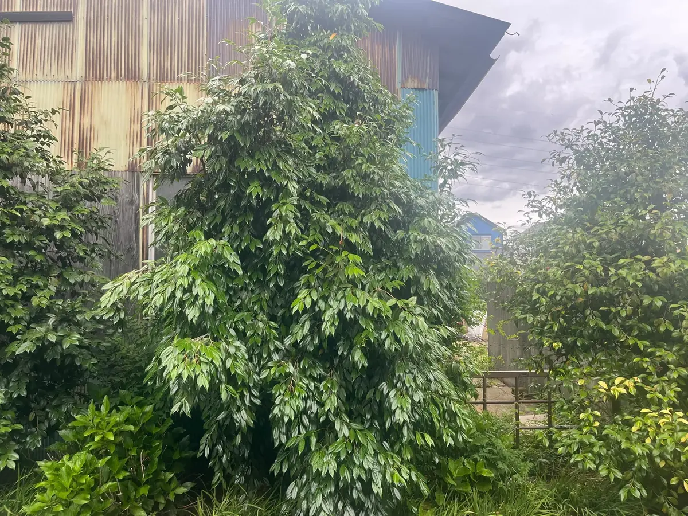
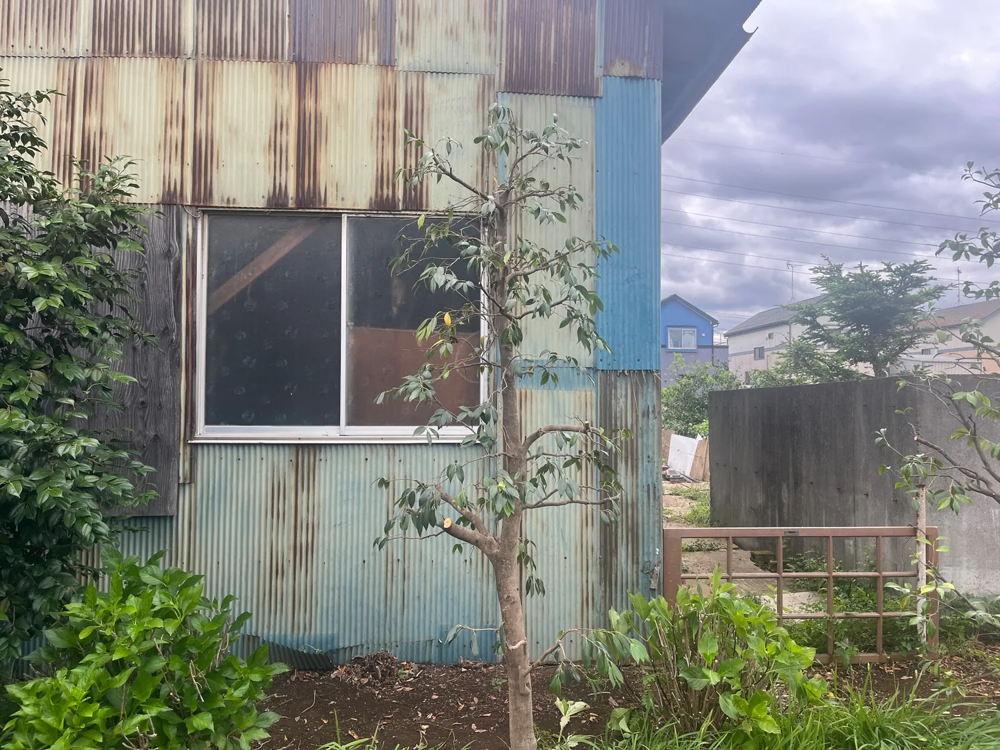

川越市を中心とした施工実績
施工事例
剪定・伐採・除草・防草シートなど、実際に行った作業を施工前後の写真とともに掲載していきます。地域や作業内容、料金の目安もできるだけ分かりやすく紹介します。
施工事例
実際の施工写真を掲載しています。地域・樹種・料金など、確認できていない情報は無理に掲載せず、正確な情報だけを追加していきます。


庭木剪定
庭木剪定の施工事例
大きく茂った枝葉を整理し、全体のボリュームを抑えた施工例です。
詳しく見る →施工事例では、こんな情報を掲載します
実際の作業内容が分かるよう、確認できた情報から順に掲載します。
- 施工した市区町村
- 剪定・伐採・除草などの作業内容
- 庭木の高さや施工面積
- 施工前・施工後の写真
- 作業時間や料金の目安
- 作業時のポイント